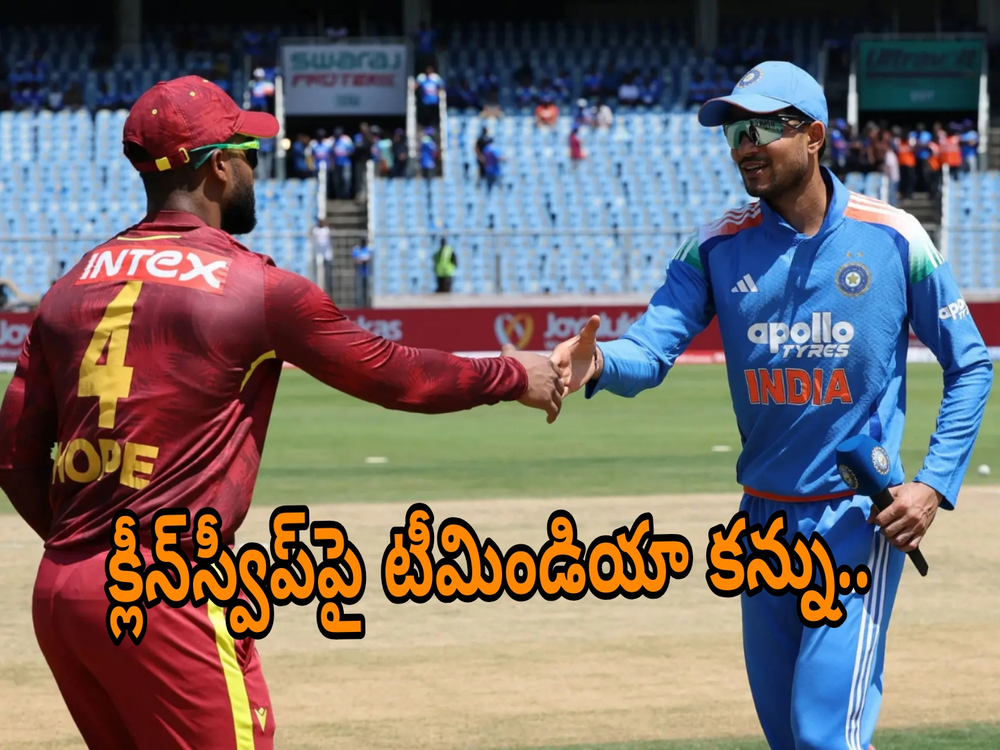

న్యూ చండీగఢ్: భారత్–వెస్టిండీస్ మధ్య జరుగుతున్న మూడు మ్యాచ్ల వన్డే సిరీస్లో చివరి సమరం ప్రారంభమైంది. ఇప్పటికే తొలి రెండు వన్డేల్లో ఘన విజయాలు సాధించిన టీమిండియా 2–0తో సిరీస్ను కైవసం చేసుకుంది. ఇప్పుడు మూడో వన్డేలోనూ విజయం సాధించి 3–0తో క్లీన్స్వీప్ పూర్తి చేయాలని భారత జట్టు లక్ష్యంగా పెట్టుకుంది. మరోవైపు సిరీస్ను కోల్పోయిన వెస్టిండీస్కు ఈ మ్యాచ్ పరువు నిలబెట్టుకునే అవకాశంగా మారింది.
న్యూ చండీగఢ్లోని PCA ఇంటర్నేషనల్ క్రికెట్ స్టేడియం ఈ మ్యాచ్కు వేదికగా నిలిచింది. అక్టోబర్ 3న మధ్యాహ్నం 2 గంటలకు మ్యాచ్ ప్రారంభమైంది. టాస్ గెలిచిన భారత కెప్టెన్ శుభ్మన్ గిల్ ముందుగా బ్యాటింగ్ ఎంచుకున్నాడు. ఈ మ్యాచ్కు మరో ప్రత్యేకత కూడా ఉంది. న్యూ చండీగఢ్ వేదికగా పురుషుల అంతర్జాతీయ వన్డే మ్యాచ్ జరగడం ఇదే తొలిసారి.

తొలి రెండు మ్యాచ్ల్లో భారత్ ఆధిపత్యం
ఈ సిరీస్లో భారత్ ప్రదర్శన చూస్తే బ్యాటింగ్ విభాగం ఎంత బలంగా ఉందో స్పష్టమవుతోంది. తిరువనంతపురంలో జరిగిన తొలి వన్డేలో వెస్టిండీస్ 295 పరుగులు చేసింది. లక్ష్యాన్ని భారత్ కేవలం 41.4 ఓవర్లలో రెండు వికెట్లు మాత్రమే కోల్పోయి ఛేదించింది. దీంతో ఎనిమిది వికెట్ల తేడాతో విజయం సాధించింది.
రెండో వన్డేలో మాత్రం భారత బ్యాటింగ్ మరో స్థాయికి వెళ్లింది. వెస్టిండీస్ తొలుత 405/7 పరుగుల భారీ స్కోరు చేసింది. ఇంతటి భారీ లక్ష్యాన్ని ఛేదించడం సులభం కాదని అనిపించినప్పటికీ భారత బ్యాటర్లు అద్భుతంగా ఆడారు. భారత్ 43.3 ఓవర్లలో కేవలం రెండు వికెట్లు కోల్పోయి 406 పరుగులు చేసి విజయాన్ని అందుకుంది.
ఈ మ్యాచ్లో భారత కెప్టెన్ శుభ్మన్ గిల్ సంచలన ఇన్నింగ్స్ ఆడాడు. గిల్ 223 పరుగులతో నాటౌట్గా నిలిచాడు. అతడి ఇన్నింగ్స్లో పవర్ హిట్టింగ్తో పాటు అద్భుతమైన షాట్ మేకింగ్ కనిపించింది. గిల్ కేవలం 117 బంతుల్లో డబుల్ సెంచరీ మార్క్ను అందుకున్నట్లు నివేదికలు పేర్కొన్నాయి. ఈ ప్రదర్శనతో అతడు వన్డే క్రికెట్లో అత్యంత వేగంగా డబుల్ సెంచరీ సాధించిన బ్యాటర్గా రికార్డు సృష్టించాడు.
గిల్కు తోడుగా రోహిత్ శర్మ కూడా భారీ ఇన్నింగ్స్ ఆడాడు. వీరిద్దరూ కలిసి భారీ ఓపెనింగ్ భాగస్వామ్యాన్ని నెలకొల్పారు. రోహిత్ 101 పరుగులు చేయడంతో భారత్ భారీ లక్ష్యాన్ని ఎలాంటి ఒత్తిడి లేకుండా ఛేదించే పరిస్థితి ఏర్పడింది. ఈ భాగస్వామ్యం రెండో వన్డేలో మ్యాచ్ను పూర్తిగా భారత నియంత్రణలోకి తీసుకెళ్లింది.
గిల్పై మరోసారి అందరి దృష్టి
మూడో వన్డేలోనూ అందరి దృష్టి భారత కెప్టెన్ శుభ్మన్ గిల్పైనే ఉంది. తొలి రెండు మ్యాచ్ల్లో అతడు భారీగా పరుగులు సాధించాడు. సిరీస్లో ఇప్పటివరకు గిల్ అత్యధిక పరుగులు చేసిన బ్యాటర్గా ఉన్నాడు. వెస్టిండీస్ బౌలర్లు అతడిని అడ్డుకోవడం కోసం ప్రత్యేక ప్రణాళికతో బరిలోకి దిగాల్సిన పరిస్థితి ఏర్పడింది.
అయితే ఈ మ్యాచ్లో గిల్పై ఒత్తిడి భిన్నంగా ఉంది. సిరీస్ ఇప్పటికే భారత్ చేతిలో ఉండటంతో ఫలితపరంగా పెద్ద ప్రమాదం లేదు. కానీ క్లీన్స్వీప్ సాధించాలంటే చివరి మ్యాచ్లోనూ స్థిరమైన ప్రదర్శన అవసరం. అందుకే గిల్ బ్యాటింగ్ మాత్రమే కాకుండా కెప్టెన్గా జట్టు వ్యూహాలను ఎలా అమలు చేస్తాడన్నది కూడా ఆసక్తికరంగా మారింది.
రోహిత్, కోహ్లీ అనుభవం కీలకం
భారత జట్టులో రోహిత్ శర్మ, విరాట్ కోహ్లీ వంటి అనుభవజ్ఞులైన బ్యాటర్లు ఉండటం మరో బలం. రెండో వన్డేలో రోహిత్ సెంచరీతో జట్టుకు భారీ ప్రారంభాన్ని అందించాడు. విరాట్ కోహ్లీ కూడా సిరీస్లో కీలక పరుగులు చేశాడు. వెస్టిండీస్ బౌలింగ్ దాడిపై ఈ ఇద్దరి అనుభవం ప్రభావం చూపే అవకాశం ఉంది.
మూడో వన్డేలో భారత జట్టు మిగిలిన ఆటగాళ్లకు కూడా అవకాశాలు లభించే అవకాశం ఉంది. సిరీస్ గెలిచిన నేపథ్యంలో బెంచ్లో ఉన్న ఆటగాళ్లను పరీక్షించడం ద్వారా భవిష్యత్ సిరీస్ల కోసం జట్టు కలయికను పరిశీలించే అవకాశం భారత మేనేజ్మెంట్కు లభిస్తోంది.
అన్షుల్ కంబోజ్కు అరంగేట్రం
మూడో వన్డేలో భారత జట్టులో అన్షుల్ కంబోజ్కు వన్డే అరంగేట్రం చేసే అవకాశం లభించింది. ప్రసిద్ధ్ కృష్ణ గాయం కారణంగా ఈ మ్యాచ్కు దూరమయ్యాడు. అతడి స్థానంలో కంబోజ్ తుది జట్టులోకి వచ్చాడు. అలాగే మహమ్మద్ సిరాజ్, నితీశ్ కుమార్ రెడ్డి కూడా జట్టులోకి తిరిగి వచ్చారు.
యువ ఆటగాడైన కంబోజ్కు ఇది తన సామర్థ్యాన్ని అంతర్జాతీయ స్థాయిలో చూపించుకునే కీలక అవకాశం. సిరీస్ ఇప్పటికే భారత్ చేతిలో ఉండటంతో అతనిపై ఫలితపరమైన ఒత్తిడి తక్కువగా ఉంటుంది. అయితే తొలి అంతర్జాతీయ మ్యాచ్లో ప్రదర్శన ఇవ్వడం ద్వారా జట్టులో తన స్థానాన్ని బలోపేతం చేసుకోవాలని అతడు భావించే అవకాశం ఉంది.
ప్రసిద్ధ్ కృష్ణకు గాయం
మూడో వన్డేకు ముందు భారత జట్టుకు చిన్న ఎదురుదెబ్బ తగిలింది. ఫాస్ట్ బౌలర్ ప్రసిద్ధ్ కృష్ణ హ్యామ్స్ట్రింగ్ గాయంతో చివరి వన్డేకు దూరమయ్యాడు. రాబోయే అంతర్జాతీయ మ్యాచ్లను దృష్టిలో పెట్టుకుని అతని ఫిట్నెస్పై భారత జట్టు మేనేజ్మెంట్ జాగ్రత్తగా వ్యవహరించాల్సిన పరిస్థితి ఏర్పడింది.
అతడి స్థానంలో అన్షుల్ కంబోజ్కు అవకాశం రావడంతో ఈ మ్యాచ్ భారత బౌలింగ్ విభాగానికి కూడా పరీక్షగా మారింది. సిరాజ్ తిరిగి రావడం భారత పేస్ దాడికి అనుభవాన్ని జోడించింది.
కుల్దీప్ యాదవ్పై అంచనాలు
బ్యాటర్లు వరుసగా వార్తల్లో నిలుస్తున్నప్పటికీ భారత బౌలింగ్లో కుల్దీప్ యాదవ్ కూడా కీలక పాత్ర పోషిస్తున్నాడు. తొలి రెండు వన్డేల్లో కుల్దీప్ ఆరు వికెట్లు తీసుకున్నాడు. మధ్య ఓవర్లలో అతడి స్పిన్ వెస్టిండీస్ బ్యాటర్లకు ఇబ్బందులు సృష్టించింది.
మూడో వన్డేలో కూడా కుల్దీప్పై భారత జట్టు ఆశలు పెట్టుకుంది. కొత్త వేదికలో పిచ్ ఎలా స్పందిస్తుందన్నది మ్యాచ్ సాగుతున్న కొద్దీ స్పష్టమయ్యే అవకాశం ఉంది. బ్యాటింగ్కు అనుకూల పరిస్థితులు ఉంటే బౌలర్లు తమ వైవిధ్యంతో వికెట్లు సాధించాల్సి ఉంటుంది.
వెస్టిండీస్కు చివరి అవకాశం
ఇక వెస్టిండీస్ విషయానికి వస్తే ఈ మ్యాచ్ వారికి సిరీస్లో తొలి విజయం సాధించే చివరి అవకాశం. తొలి రెండు మ్యాచ్ల్లో భారీ స్కోర్లు సాధించినప్పటికీ భారత బ్యాటింగ్ను నిలువరించడంలో విఫలమయ్యారు.
ముఖ్యంగా రెండో వన్డేలో 405 పరుగుల భారీ స్కోరు చేసినప్పటికీ భారత్ దాన్ని సులభంగా ఛేదించడం వెస్టిండీస్ బౌలింగ్ విభాగానికి ఆందోళన కలిగించే అంశంగా మారింది. 400కు పైగా స్కోరు చేసినా మ్యాచ్ను గెలవలేకపోవడం జట్టులోని లోపాలను స్పష్టంగా చూపించింది.
వెస్టిండీస్ కెప్టెన్ షాయ్ హోప్ ముందు ఇప్పుడు మరో సవాలు ఉంది. భారత టాప్ ఆర్డర్ను ప్రారంభంలోనే నియంత్రించగలిగితే మ్యాచ్లో పోటీ పెంచే అవకాశం ఉంటుంది. లేకపోతే తొలి రెండు మ్యాచ్ల మాదిరిగానే మరోసారి భారత బ్యాటర్లు ఆధిపత్యం చెలాయించే పరిస్థితి ఏర్పడుతుంది.
వెస్టిండీస్ జట్టులో మార్పులు
మూడో వన్డే కోసం వెస్టిండీస్ కూడా తుది జట్టులో మార్పులు చేసింది. జువెల్ ఆండ్రూ తిరిగి జట్టులోకి వచ్చాడు. మాథ్యూ ఫోర్డ్, గుడాకేశ్ మోటీ కూడా తుది జట్టులో చోటు సంపాదించారు. మరోవైపు రోస్టన్ చేజ్, షమర్ జోసెఫ్లకు ఈ మ్యాచ్లో చోటు దక్కలేదు.
ఈ మార్పులతో వెస్టిండీస్ తమ బౌలింగ్, బ్యాటింగ్ సమతుల్యతను మెరుగుపరుచుకోవాలని చూస్తోంది. సిరీస్ ఇప్పటికే కోల్పోయినా చివరి మ్యాచ్లో విజయం సాధించడం ద్వారా భారత పర్యటనలో కొంత సానుకూల ముగింపు సాధించాలని వెస్టిండీస్ భావిస్తోంది.
కొత్త వేదికలో తొలి అంతర్జాతీయ వన్డే
న్యూ చండీగఢ్లోని ఈ స్టేడియంలో పురుషుల వన్డే మ్యాచ్ జరగడం ఇదే తొలిసారి. దీంతో ఈ మ్యాచ్కు మరో ప్రత్యేకత ఏర్పడింది. కొత్త వేదిక కావడంతో పిచ్ స్వభావంపై కూడా ఆసక్తి నెలకొంది. తొలి రెండు మ్యాచ్ల్లో బ్యాటింగ్కు అనుకూల పరిస్థితులు కనిపించడంతో ఈ మ్యాచ్లోనూ బ్యాటర్లకు అనుకూల పరిస్థితులు ఉండొచ్చని అంచనాలు ఉన్నాయి.
అయితే మ్యాచ్ సాగుతున్న కొద్దీ పిచ్ పరిస్థితులు మారే అవకాశం ఉంటుంది. ముఖ్యంగా డే–నైట్ మ్యాచ్ కావడంతో రెండో ఇన్నింగ్స్లో పరిస్థితులు ఎలా ఉంటాయన్నది కూడా కీలకంగా మారుతుంది.
టాస్ గెలిచిన భారత్.. బ్యాటింగ్ ఎంచుకున్న గిల్
మూడో వన్డేలో టాస్ కూడా భారత్కే అనుకూలించింది. కెప్టెన్ శుభ్మన్ గిల్ టాస్ గెలిచి ముందుగా బ్యాటింగ్ ఎంచుకున్నాడు. ఇది గిల్ వరుసగా గెలిచిన మూడో టాస్. భారత్ ఇప్పటికే సిరీస్ను 2–0తో గెలుచుకున్న నేపథ్యంలో, చివరి మ్యాచ్లోనూ దూకుడైన క్రికెట్ ఆడాలని జట్టు భావిస్తున్నట్లు పరిస్థితులు సూచిస్తున్నాయి.
భారత్ తుది జట్టులో శుభ్మన్ గిల్, రోహిత్ శర్మ, విరాట్ కోహ్లీ, రుతురాజ్ గైక్వాడ్, కేఎల్ రాహుల్, నితీశ్ కుమార్ రెడ్డి, నామన్ ధీర్, అన్షుల్ కంబోజ్, కుల్దీప్ యాదవ్, మహమ్మద్ సిరాజ్, గుర్నూర్ బ్రార్ ఉన్నారు.
వెస్టిండీస్ తుది జట్టులో జాన్ క్యాంప్బెల్, జువెల్ ఆండ్రూ, షాయ్ హోప్, అమీర్ జాంగూ, షెర్ఫేన్ రూథర్ఫర్డ్, కీమో పాల్, మాథ్యూ ఫోర్డ్, అల్జారీ జోసెఫ్, గుడాకేశ్ మోటీ, జేడెన్ సీల్స్, విటెల్ లాస్ ఉన్నారు.
క్లీన్స్వీప్పై భారత్ దృష్టి
సిరీస్ గెలవడం ఇప్పటికే పూర్తయింది. ఇప్పుడు భారత జట్టు ముందున్న లక్ష్యం 3–0. తొలి రెండు మ్యాచ్లలో ఎనిమిది వికెట్ల తేడాతో విజయాలు సాధించిన భారత్ బ్యాటింగ్లో అద్భుతమైన ఫామ్ను చూపించింది. మూడో మ్యాచ్లోనూ అదే జోరును కొనసాగిస్తే వెస్టిండీస్పై పూర్తి ఆధిపత్యంతో సిరీస్ను ముగించే అవకాశం ఉంటుంది.
అయితే క్రికెట్లో ప్రతి మ్యాచ్ కొత్త సవాలే. వెస్టిండీస్కు కోల్పోయేది ఏమీ లేకపోవడంతో స్వేచ్ఛగా ఆడే అవకాశం ఉంది. అందువల్ల భారత్ చివరి మ్యాచ్ను తేలికగా తీసుకునే పరిస్థితి లేదు. ముఖ్యంగా తొలి పవర్ప్లేలో వికెట్లు, మధ్య ఓవర్లలో స్పిన్ ప్రభావం, చివరి ఓవర్లలో పరుగుల వేగం మ్యాచ్ ఫలితాన్ని ప్రభావితం చేసే అంశాలుగా మారనున్నాయి.
ముగింపు
భారత్–వెస్టిండీస్ మూడో వన్డే సిరీస్ ఫలితాన్ని నిర్ణయించే మ్యాచ్ కాకపోయినా, రెండు జట్లకూ ప్రాధాన్యత ఉన్న పోరుగా మారింది. భారత్ ఇప్పటికే 2–0తో సిరీస్ను సొంతం చేసుకుంది. ఇప్పుడు 3–0తో క్లీన్స్వీప్ పూర్తి చేయాలని చూస్తోంది. మరోవైపు వెస్టిండీస్ కనీసం చివరి మ్యాచ్లోనైనా విజయం సాధించి సిరీస్ను 2–1తో ముగించాలని భావిస్తోంది.
శుభ్మన్ గిల్ ఇప్పటికే ఈ సిరీస్లో బ్యాటింగ్తో సంచలనాలు సృష్టించాడు. రోహిత్ శర్మ, విరాట్ కోహ్లీ వంటి అనుభవజ్ఞులు కూడా భారత బ్యాటింగ్కు బలంగా నిలుస్తున్నారు. బౌలింగ్లో కుల్దీప్ యాదవ్ ప్రభావం చూపుతుండగా, ప్రసిద్ధ్ కృష్ణ గైర్హాజరీలో అన్షుల్ కంబోజ్కు అంతర్జాతీయ అరంగేట్రం లభించింది.
మరోవైపు వెస్టిండీస్కు ఇది తమ సామర్థ్యాన్ని నిరూపించుకునే చివరి అవకాశం. భారీ స్కోర్లు చేయగలమని ఇప్పటికే చూపించిన ఆ జట్టు, ఈసారి భారత బ్యాటింగ్ను ఎలా అడ్డుకుంటుందన్నదే ప్రధాన ప్రశ్న.
మొత్తంగా చూస్తే.. సిరీస్ భారత్ చేతిలో ఉన్నా, చివరి వన్డేలో ఆసక్తి మాత్రం తగ్గలేదు. ఒకవైపు గిల్ సేన క్లీన్స్వీప్ కోసం బరిలోకి దిగితే, మరోవైపు వెస్టిండీస్ పరువు కోసం పోరాడుతోంది. న్యూ చండీగఢ్లో జరుగుతున్న ఈ మ్యాచ్లో ఎవరి వ్యూహాలు ఫలిస్తాయన్నది క్రికెట్ అభిమానుల్లో ఆసక్తిని పెంచుతోంది.